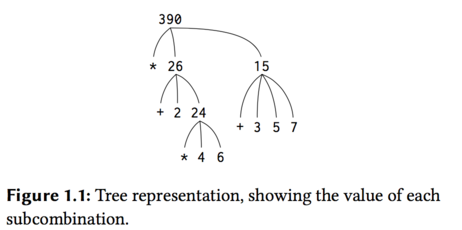
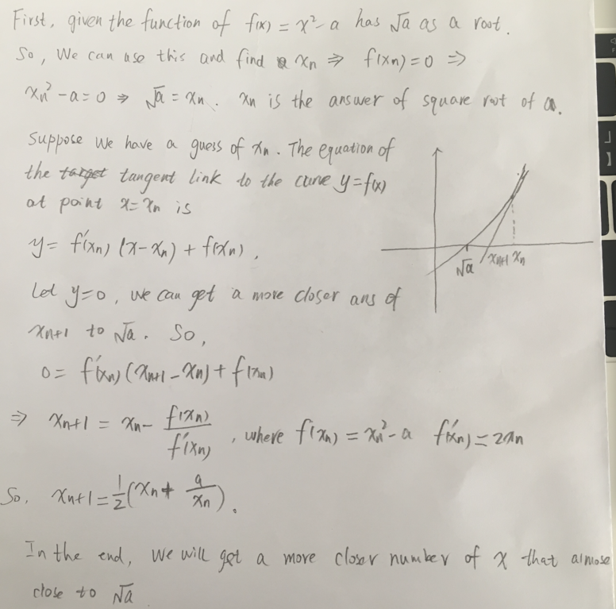
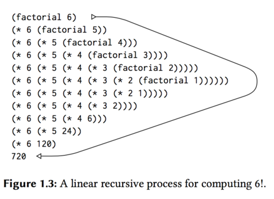
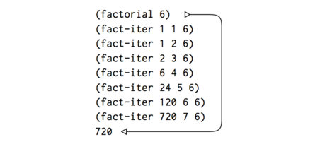

SICP
Table of Contents
- 环境的选择
- 相关资源
- 读书笔记和代码
- Chapter 1 Building Abstractions with Procedures
- The Elements of Programming
- Expressions
- Naming and the Environment
- Evaluating Combinations
- Compound Procedures
- The Substitution Model for Procedure Application
- Applicative order versus normal order
- Conditional Expressions and Predicates
- Example: Square Roots by Newton's Method
- Supplement of Newton's Method:
- Procedures as Black-Box Abstractions
- Procedures and the Processes They Generate
- The Elements of Programming
- Chapter 1 Building Abstractions with Procedures
- 练习答案
这个主要介SICP这本书环境搭建，相关的资源以及读书笔记和代码。
环境的选择
学习SICP这本书，我们要先搭建一个scheme环境，可以使用Emacs，但是比较的麻烦。另外，下载DrRacket。 这里有个链接：http://docs.racket-lang.org/sicp-manual/index.html
相关资源
读书笔记和代码
.#+TITLE: sicp
Chapter 1 Building Abstractions with Procedures
The acts of the mind, wherein it exerts its power over simple ideas, are chiefly these three: 1. Combining several simple ideas into one compound one, and thus all complex ideas are made. 2. The second is bringing two ideas, whether simple or complex, together, and seting them by one another so as to take a view of them at once, without uniting them into one, by which it gets all its ideas of relations. 3. The third is separating them from all other ideas that accompany them in their real existence: this is called abstraction, and thus all its general ideas are made.
—John Locke, An Essay Concerning Human Understanding (1690)
The Elements of Programming
A powerful programming language is more than just a means for instructing a computer to perform tasks. The language also serves as a framework within which we organize our idea about processes.
Every powerful language has three mechanisms for accomplishing this:
primitive expressions, which represent the simplest entities the language is concerned with.means of combination, by which compound elements are build from simpler ones, andmeans of abstraction, by which compound elements can be named and manipulated as units.
In programming, we deal with two kinds of elements: procedures and data.
Expressions
Expressions representing numbers maybe combined with an expression representing a primitive procedures(such as + or *) to form a compound expression of the procedure to those numbers.
(+ 137 349) (/ 5 99) (+ 2.2 19)
The convention of placing the operator to the left of
the operands is known as prefix notation , and it may be somewhat
confusing at first because it departs significantly from the
customary mathematical convention. Prefix notation has serveral
advantages. One of the is that it can accommodate
procedures that may take an arbitrary number of arguments, as the
following examples:
(+ 12 23 43 4) (* 33 85 2)
A second advantage of prefix notation is that it extends in a straightforward way to allow combinations to be nested, that is, to have combinations whose elements are themselves combinations:
(+ (* 3 5) (- 10 6))
There is no limit to the depth of such nesting.
Instead to write the code like in one line:
(+ (* 3 (+ (* 2 4) (+ 3 5))) (+ (- 10 7) 6))
We can write it to the following form as pretty-printing:
(+ (* 3 (+ (* 2 4) (+ 3 5))) (+ (- 10 7) 6))
Naming and the Environment
In the Scheme, we name things with define .
(define size 2) size (* 5 size)
Here are further examples of the use of define :
(define pi 3.14) (define radius 10) (define curcumference (* 2 pi radius))
Evaluating Combinations
For example,evaluating
(* (+ 2 (* 4 6)) (+ 3 5 7))
requires that the evaluation rule be applied to four different combinations. We can obtain a picture of this process by representing the combination in the form of a tree , as shown in blow. The terminal nodes represent either operators or numbers.

Compound Procedures
Now we will learn about procedure definitions , a much
more powerful abstraction by which a compound operation
can be given a name and then referred to as a unit. Like:
(define (square x) (* x x)) (square 21) (square (+ 2 5)) (square (square 3))
The general form of a procedure definition is
(define (<name> <formal parameters) <body>)
For example, \(x^2 + y^2\) can be expressed as
(+ (square x) (square y))
The Substitution Model for Procedure Application
(f 5) (sum-of-squares (+ a 1) (* a 2)) (sum-of-squares (+ 5 1) (* 5 2)) (+ (square 6) (square 10)) (+ (* 6 6) (* 10 10)) (+ 36 100) 136
The process we have just described is called the substitution model for
procedure application.
Applicative order versus normal order
The above way is not the only way to perform evaluation. An alternative evalution model would not evaluate the operands until their values were needed. Instead it first substitute operand expressions for parameters until it obtained an expression involving only primitive operators, and then perform the evaluation.
In this place, We still use the (f 5) as an example.
(sum-of-squares (+ 5 1) (* 5 2)) (+ (square (+ 5 1)) (square (* 5 2)) ) (+ (*(+51)(+51)) (*(*52)(*52))) (+ (* 6 6) (* 10 10)) (+ 36 100) 136
This method is called normal-order evaluation with fully
expand and then reduce evaluation method, in contrast
to the "evaluate the arguments and the apply" method that
the interpreter actually uses, which is called applicative-order evaluation .
Conditional Expressions and Predicates
Now, we will do like this: \[ |x| =\left\{ \begin{aligned} x & , & if & & x > 0 \\ 0 & , & if & & x = 0 \\ -x & , & if & & x < 0\end{aligned} \right.\]
We will compute the absolute value of a number by testing whether the number is positive, negative, or zero.
(define (abs x) (cond ((> x 0) x) ((= x 0) 0) ((< x 0) (- x)))) ;; or this (define (abs x) (cond ((< x 0) (- x)) (else x))) ;; if (define (abs x) (if (< x 0) (- x) x))
The general form of a conditional expression is
(cond (⟨p1⟩ ⟨e1⟩) (⟨p2⟩ ⟨e2⟩) ... (⟨pn⟩ ⟨en⟩))
There are logical composition operations, which enable us to construct compound predicates.
- (and <e1> … <en>) If any <e> evaluates to false, the value of the and expression is false, and the rest of <e>'s are not evaluated.
- (or ….) Any is ture, then return true. If all is false, then return false.
- (not ….)
As an example of how these are used. Such \(x\) be in the range \(5 < x < 10\) may be expressed as
(and (> x 5) (< x 10))
As another example, we can define a predicate to test whether one number is greater than or equal to another as:
(define (>= x y) (or (> x y) （= x y）)) ;; or (define (>= x y) (not (< x y)))
Example: Square Roots by Newton's Method
Procedures are much like ordinary mathematical functions. But there is an important difference between mathematical functions and computer procedures. Procedures must be effective.
As a case in point, consider the problem of computing square roots. We can define the square-root function as \[ \sqrt x = the \ y \ such \ that \ y \ge 0 \ and \; y^2 = x. \]
This describes a perfectly legitimate mathematical function. We could use it to recognize whether one number is the square root of another. On the other hand, the definition does not describe a procedure. Indeed, it tells us nothing about how to actually find the square root of a give number.
(define (sqrt x) (the y (and (> y 0) (= (square y) x))))
In mathematics we are usually concerned with declarative(what is) descriptions, whereas in computer science we are usually concerned with imperative(how to) descriptions.
Square root by Newton's method
{kind=link}
We write this basic strategy as a procedure:
(define (sqrt-iter guess x) (if (good-enough? guess x) guess (sqrt-iter (improve guess x) x))) (define (improve guess x) (average guess (/ x guess))) (define (average x y) (/ (+ x y) 2)) (define (square x) (* x x)) (define (good-enough? guess x) (< (abs (- (square guess) x)) 0.001)) (define (sqrt x) (sqrt-iter 1.0 x))
So, we can use sqrt to compute square root.
(sqrt 9) (sqrt (+ 100 37))
Supplement of Newton's Method:
(If you want see more detail, please visit here)

Figure 2: My understand of Newton's Method

Figure 3: From wikipedia of Newton's Method
Procedures as Black-Box Abstractions
In the previous problem, we talk about the sqrt. Notice that the definition of sqrt-iter is recursive. This will be addressed more carefully in later section.
The importance of this decomposition strategy is not simply that one is dividing the program into parts.
So, a precedure definition should be able to suppress detail. The users of the procedure may not have written the procedure themselves, but may have obtained it from another programmer as a black box. A user should not need to know how the procedure is implemented in order to use it.
- Local names
The simplest consequence is that the parameter of a procedure must be local to the body of the procedure.
- Internal definitions and block structure
We would like to localize the subprocedures, hiding them inside sqrt so that sqrt could coexist with other successive approximations, each having its own private good enough? procedure. To make this possible, we allow a procedure to have internal definitions that are local to that procedure. For example, in the square root problem we can write.
(define (sqrt x) (define (square x) (* x x)) (define (average x y) (/ (+ x y) 2)) (define (good-enough? guess x) (< (abs (- (square guess) x)) 0.001)) (define (improve guess x) (average guess (/ x guess))) (define (sqrt-iter guess x) (if (good-enough? guess x) guess (sqrt-iter (improve guess x) x))) (sqrt-iter 1.0 x))
Such nesting of definitions, called block structure.
Procedures and the Processes They Generate
To become experts, we must learn to visualize the processes generated by various types of procedures. Only after we have developed such a skill can we learn to reliably construct programs that exhibit the desired behavior.
Linear Recursion and Iteration
We begin by considering the factorial function, defined by \[ n! = n \cdot (n-1) \cdot (n-2) \cdots 3 \cdot 2 \cdot 1 \]
Thus, we can compute \(n!\) by computing \((n-1)!\) and multiplying the result by \(n\).
(define (factorial n) (if (= n 1) 1 (* n (factorial (- n 1)))))
We can use the substitution model of This section to watch this procedure in action computing \(6!\), as show in Figure 4.

Figure 4: A linear recursive process for computing 6!
Now let's take a different perspective on computing factorial. We could describe a rule for computing \(n!\).
\begin{align} product & \Leftarrow counter * product\\ counter & \Leftarrow counter + 1 \end{align}Once again, we can recast our description as a procedure for computing factorials.
(define (factorial n) (fact-iter 1 1 n)) (define (fact-iter product counter max-count) (if (> counter max-count) product (fact-iter (* product counter) (+ counter 1) max-count)))
As before, we can use the substitution mode to visualize the process of computing \(6!\), as shown in Figure

Figure 5: A linear iterative process for computing 6!
Compare the two process. We can find the "shapes" of the two processs are quite differently.
In the next, we'll talk about the difference between linear recursive process and linear iterative process.
Consider the first process. The expansion occurs as the process builds up a chain of deferred operations. This python of process, characterized by a chain of deferred operations, is called a recursive process. Carrying out the process requires that the iterpreter keep track of the operations to be performed later on.
By contrast, the second process does not grow and shrink. At each step, all we need to keep track of, for any n, are the current values of the variables product, counter, and maxcount. We call this an iterative process. In general, an iterative process is one whose state can be summarized by a fixed number of state variables, together with a fixed rule that describes how the state variables should be updated as the process moves from state to state and an (optional) end test that specifies conditions under which the process should terminate.
Understand the difference between recursive process and recursive procedure. It may seem disturbing that we refer to a recursive procedure such as factiter as generating an iterative process. However, the process really is iterative. In the page of 45 , there has more detail about this. Must read this part once again.
It will execute an iterative process in constant space, even if the iterative process is described by a recursive procedure. An implementation with this property is called tail-recursive.
Tree Recusion
As an example, consider computing the sequence of Fibonacci numbers, in which each number is the sum of the preceding two: \[0, 1, 1, 2, 3, 5, 8, 13, 21, \cdots\]
In general, the Fibonacci numbers can be defined by the rule

So, we can immediately translate this definition into a recursive procedure.
(define (fib n) (cond ((= n 0) 0) ((= n 1) 1) (else (+ (fib (- n 1)) (fib (- n 2))))))

Figure 7: The tree-recursive process generated in computing (fib 5)
Notice in Figure that the process of (fib 5) like a tree. And the entrire computation of (fib 3) is duplicated. Thus, the process uses a number of steps that grows exponentially with the input. On the other hand, the space required grows only linearly with the input.
We can compute Fibonacci numbers iteratively using the procedure.
(define (fib n) (fib-iter 1 0 n)) (define (fib-iter a b count) (if (= count 0) b (fib-iter (+ a b) a (- count 1))))
Example: Counting change
This part is more difficult to understand. And it is mainly about how to change amount of money with n kinds of coins. Read this part later
Orders of Growth
Order of growth provides a useful indication of how we may expect the behavior of the process to change as we change the size of the problem. We represent the orders with the symbol of \(\Theta\)
练习答案
Chapter 1
Exercise 1.1 p26
10 (+ 5 3 4) ===> 12 (- 9 1) ===> 8 3 6 nothing for (define a 3) nothing 19 #f for a is 3 and b is 4, so they are not equal, return false 4 16 6 16
Exercise 1.2
I don't sure how to handle \(4/5\), need decimal? The answer will be 0, if 4 or 5 is an integer.
(/ (+ 5 4 (- 2 (- 3 (+ 6 (/ 4 5))))) (* 3 (- 6 2) (- 2 7)))
Exercise 1.3
Find a more simple way to do this.
(define (sum a b c) (cond ((and (< a b) (< a c)) (+ b c)) ((and (< b a) (< b c)) (+ a c)) ((and (< c a) (< c b)) (+ a b))))
Exercise 1.4
The function of a-plus-abs-b accept 2 parameters of a and b. First, it will check if b is greater than 0 or not. If b > 0, the local procedure of "(if (> b 0) + -)" will return +, or it will return -.
So, if b > 0, the result is (+ a b) and if b <= 0, the result is (- a b). In the end, this procedure will return a plus the absolute value of b. Using infix notation is "a + abs(b)".
Exercise 1.5
If the interpreter use applicative-order evaluation, we can't get any of result. Because, it will first do the step of (p) and then return the result. But, I can't get the result.
If the iterpreter use another way, we will get the result immediately.
So, the interpreter use the first one.
(Need reference to others answer, I don't really understand this)